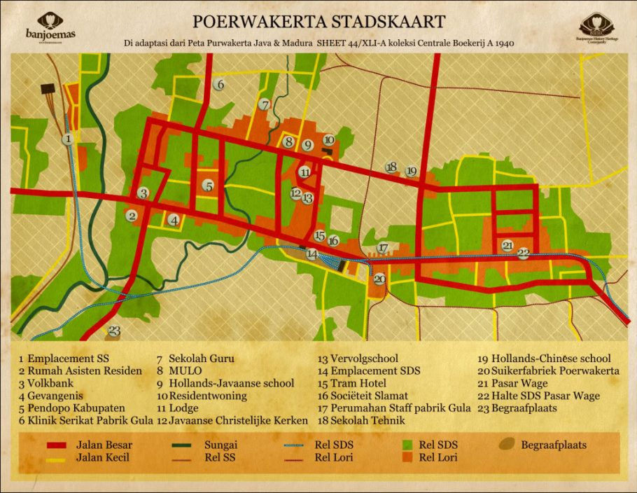
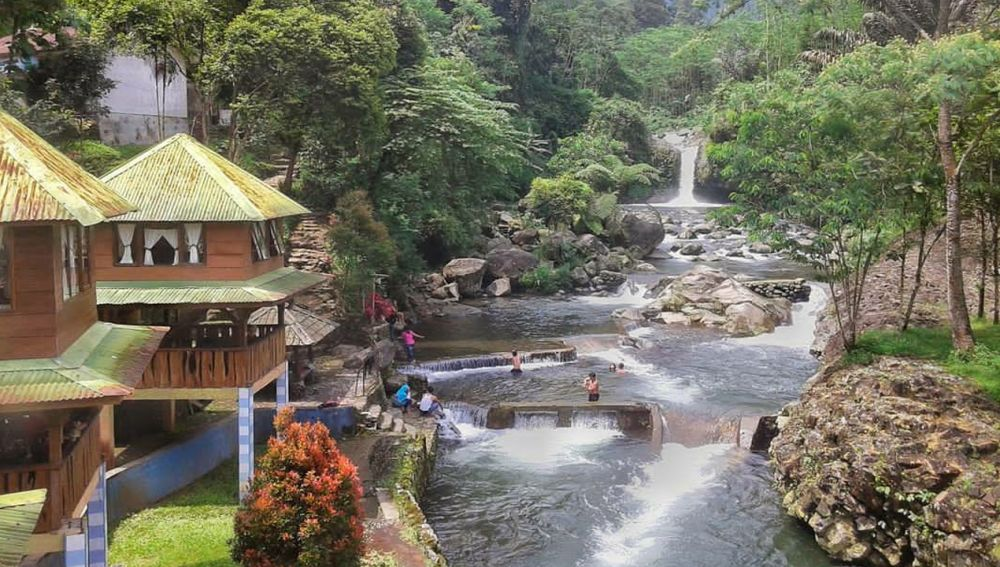

Sejarah Purwokerto

Purwokerto merupakan kota administratif yang terletak di Kabupaten Banyumas. Purwokerto
berasal dari kata "Purwo" atau "Purwa" yang berarti awal atau permulaan dan "Kerto" yang
berarti makmur. Kota ini berkembang pesat sejak zaman kolonial Belanda sebagai pusat
pemerintahan dan pendidikan di Banyumas.
Geografis Purwokerto

Purwokerto terletak di kaki Gunung Slamet, dengan ketinggian 75 hingga 200 meter di atas
permukaan laut dengan pemandangan alam yang memukau. Kota ini memiliki iklim yang sejuk
dengan pemandangan alam yang memikat.
Wisata di Purwokerto
Purwokerto dikenal dengan berbagai destinasi wisata alam dan budaya. Salah satu tempat
wisata yang populer adalah Baturaden.
Baturaden

Terletak di lereng Gunung Slamet, Baturaden menawarkan udara segar dan pemandangan
yang indah. Daya tarik utama termasuk pemandian air panas dan berbagai wahana alam.
Curug Cipendok

Curug Cipendok adalah air terjun spektakuler yang berada di kawasan pegunungan. Tempat
ini menjadi destinasi favorit bagi para wisatawan yang ingin menikmati keindahan alam.
Museum Bank Rakyat Indonesia

Museum BRI menceritakan sejarah awal mula Bank Rakyat Indonesia yang didirikan di
Purwokerto, dan merupakan museum perbankan pertama di Indonesia.